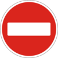
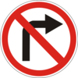
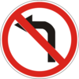
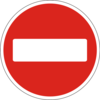
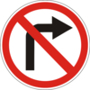
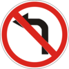
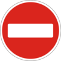
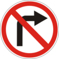
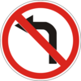

1
2
3
4
5
6
7
8
9
10
11
12
13
14
15
16
17
18
19
20
21
22
23
24
25
26
27
28
29
30
31
32
33
34
3. Движение транспортных средств со специальными сигналами
3.1.
Водители оперативных транспортных средств, выполняя неотложное служебное задание, могут отступать от требований разделов 8 (кроме сигналов регулировщика), 10 - 18 , 26 , 27 и пункта 28.1 данных Правил при условии включения проблескового маячка синего или красного цвета и специального звукового сигнала и обеспечения безопасности дорожного движения. При отсутствии необходимости дополнительного привлечения внимания участников дорожного движения специальный звуковой сигнал может быть выключен.
3.2.
В случае приближения транспортного средства с включенным синим проблесковым маячком и (или) специальным звуковым сигналом водители других транспортных средств, которые могут создавать ему препятствие для движения, обязаны уступить ему дорогу и обеспечить беспрепятственный проезд указанного транспортного средства (и сопровождаемых им транспортных средств).
На транспортных средствах, движущихся в сопровождаемой колонне, должен быть включен ближний свет фар.
Если на таком транспортном средстве включены проблесковые маячки синего и красного или только красного цвета, водители других транспортных средств обязаны остановиться у правого края проезжей части (на правой обочине). На дороге с разделительной полосой это требование обязаны выполнить водители транспортных средств, движущихся в попутном направлении.
3.3.
Если во время сопровождения колонны транспортных средств, на транспортном средстве, движущемся впереди колонны, включены проблесковые маячки синего и красного или только красного цвета, колонну должно замыкать транспортное средство с включенным зеленым или синим и зеленым проблесковыми маячками, после проезда которого отменяются ограничения на движение других транспортных средств.
3.4.
Запрещается осуществлять обгон и опережение транспортных средств с включенными проблесковыми маячками синего и красного или только красного цвета и зеленого или синего и зеленого цвета и сопровождаемых ими транспортных средств (колонны), а также двигаться по смежным полосам со скоростью колонны или занимать место в колонне.
3.5.
Приближаясь к неподвижному транспортному средству с включенным проблесковым маячком синего цвета и специальным звуковым сигналом (или без включенного специального звукового сигнала), стоящему на обочине (около проезжей части) или на проезжей части, водитель должен снизить скорость
до 40 км/ч
и в случае подачи регулировщиком соответствующего сигнала остановиться. Продолжать движение можно только с разрешения регулировщика.
3.6.
Включение проблескового маячка оранжевого цвета на транспортных средствах с опознавательным знаком
 «Дети»,
на механических транспортных средствах дорожно-эксплуатационной службы во время выполнения работы на дороге, на крупногабаритных и тяжеловесных транспортных средствах не дает им преимущества в движении, а служит для привлечения внимания и предупреждения об опасности. При этом водителям транспортных средств дорожно-эксплуатационной службы во время выполнения работы на дороге разрешается отступать от требований дорожных знаков (кроме знаков приоритета и знаков



3.21-3.23,
дорожной разметки, а также пунктов 11.2 , 11.5 - 11.10 , 11.12 , 11.13 , подпунктов «б», «в», «ґ» пункта 26.2 данных Правил при условии обеспечения безопасности дорожного движения. Водители других транспортных средств не должны препятствовать их работе.
«Дети»,
на механических транспортных средствах дорожно-эксплуатационной службы во время выполнения работы на дороге, на крупногабаритных и тяжеловесных транспортных средствах не дает им преимущества в движении, а служит для привлечения внимания и предупреждения об опасности. При этом водителям транспортных средств дорожно-эксплуатационной службы во время выполнения работы на дороге разрешается отступать от требований дорожных знаков (кроме знаков приоритета и знаков



3.21-3.23,
дорожной разметки, а также пунктов 11.2 , 11.5 - 11.10 , 11.12 , 11.13 , подпунктов «б», «в», «ґ» пункта 26.2 данных Правил при условии обеспечения безопасности дорожного движения. Водители других транспортных средств не должны препятствовать их работе.
«Дети»,
на механических транспортных средствах дорожно-эксплуатационной службы во время выполнения работы на дороге, на крупногабаритных и тяжеловесных транспортных средствах не дает им преимущества в движении, а служит для привлечения внимания и предупреждения об опасности. При этом водителям транспортных средств дорожно-эксплуатационной службы во время выполнения работы на дороге разрешается отступать от требований дорожных знаков (кроме знаков приоритета и знаков



3.21-3.23,
дорожной разметки, а также пунктов 11.2 , 11.5 - 11.10 , 11.12 , 11.13 , подпунктов «б», «в», «ґ» пункта 26.2 данных Правил при условии обеспечения безопасности дорожного движения. Водители других транспортных средств не должны препятствовать их работе.